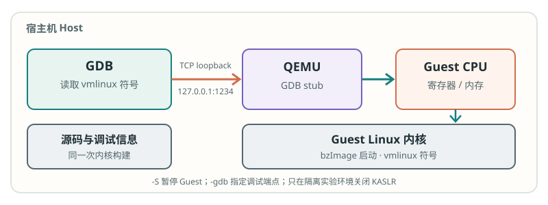

调试内核的风险在于：错误可能发生在最高特权级，影响整个 Guest 系统。一个稳妥的学习环境应该把宿主机与实验系统隔离，并且让每次实验都能重置。QEMU 提供虚拟硬件和 GDB stub；GDB 负责源码级观察；xv6 则用较小的代码规模展示操作系统机制。

一、QEMU搭建虚拟硬件平台
QEMU 有 system emulation 和 user-mode emulation 等不同运行方式。qemu-system-x86_64、qemu-system-aarch64 等命令用于模拟整台机器及其 CPU、内存和设备；在支持的宿主机上，它也可以借助 KVM、HVF 等硬件加速后端。不是每次运行 QEMU 都意味着“纯软件模拟”，也不是每个宿主平台都支持同一种加速器。
1. 安装与确认
包名因发行版和版本不同而异。Ubuntu/Debian 可从发行版仓库安装 QEMU system emulator 与工具包；其他系统请按其包管理器选择对应的 system target。安装后先检查目标二进制和支持的 machine type：
qemu-system-x86_64 --version
qemu-system-x86_64 -machine help2. 创建虚拟磁盘并从安装介质启动
qemu-img create -f qcow2 os-lab.qcow2 20G
qemu-system-x86_64 \
-machine q35 -m 4G -smp 4 \
-drive file=os-lab.qcow2,format=qcow2,if=virtio \
-cdrom ./linux-installer.iso -boot order=d \
-nic user,model=virtio-net-pci -display gtk这条命令创建一个空磁盘，并从你自己准备的安装 ISO 启动安装程序。不要把空 qcow2 磁盘镜像误认为已经安装好的系统。若宿主机支持硬件加速，可以按平台增加对应的 -accel 参数；不支持时先去掉加速参数，使用可用的默认后端。
3. User-mode 网络的边界
-nic user 使用 QEMU 的用户态网络栈，不需要为 Guest 建立 TAP 接口。常见默认网段中 Guest 地址为 10.0.2.15，虚拟网关为 10.0.2.2。这种模式通常允许 Guest 发起出站连接，但默认会阻止外部主动连入；如确有需要，可通过 hostfwd 显式转发端口。参考 QEMU Network Emulation。
二、GDB+QEMU远程调试内核
QEMU GDB stub 与 Linux KGDB 是两种不同机制。GDB stub 由 QEMU 提供，可以观察和控制虚拟 CPU；KGDB 则是 Linux 内核内部的调试设施。使用 QEMU 的 -gdb 接口时，不需要为了建立 GDB 连接而启用 CONFIG_KGDB。
1. 准备带调试符号的内核
使用自己构建的内核，确保 vmlinux 与启动镜像来自同一次构建，并启用适当的调试信息配置，例如 CONFIG_DEBUG_INFO。vmlinux 是带符号信息的 ELF 文件；arch/x86/boot/bzImage 是 x86 启动用的压缩镜像。二者用途不同，不能拿 bzImage 直接代替 GDB 符号文件。
2. 启动 QEMU 并连接
# 终端 1：rootfs.cpio.gz 内需要包含可执行的 /init
qemu-system-x86_64 \
-machine q35 -m 2G -smp 2 \
-kernel ./arch/x86/boot/bzImage \
-initrd ./rootfs.cpio.gz \
-append "console=ttyS0 rdinit=/init nokaslr" \
-display none -serial stdio -monitor none \
-gdb tcp:127.0.0.1:1234 -S
# 终端 2：使用同一次构建的 vmlinux
gdb ./vmlinux
(gdb) target remote 127.0.0.1:1234
(gdb) break start_kernel
(gdb) continue-S 让 Guest CPU 在启动时暂停；-gdb 指定 GDB stub 连接；绑定到 127.0.0.1 可避免把调试端口暴露到外部网络。QEMU 的 -s 是打开 TCP 1234 端口的简写，但这里使用显式 loopback 地址更容易表达安全边界。
nokaslr 在启用了内核地址随机化时关闭本次 Guest 的 KASLR，便于将符号地址与运行地址对应。它会降低被调试 Guest 的地址随机化保护，只应在隔离的调试环境中使用。QEMU GDB stub 的行为见 QEMU GDB usage；nokaslr 的含义见 Linux kernel parameters。
3. 常用 GDB 命令
(gdb) info registers
(gdb) break start_kernel
(gdb) continue
(gdb) next
(gdb) step
(gdb) bt
(gdb) x/10gx $rsp源码断点要求符号与实际运行内核匹配。开启 KASLR、使用了不同构建产物、优化级别较高或源码路径不匹配，都可能导致断点位置和变量显示不符合预期。
机制追踪：GDB 断点命中前，宿主机与 Guest 之间发生了什么？
“能连上 GDB”和“断点真的停在内核里”是两件事。把 -S、-gdb、target remote 与 break 排成一条时间线，就能定位连不上或断点不命中的原因。
- Guest CPU 先停住：
-S让虚拟 CPU 在上电后暂停，不执行第一条指令，给调试器留出连接窗口。 - QEMU 打开 gdbstub：
-gdb tcp:127.0.0.1:1234在宿主机回环地址监听，用远程串行协议交换寄存器与内存读写请求。这是 QEMU 的机制，不依赖CONFIG_KGDB。 - GDB 绑定符号：GDB 加载与本次启动镜像同一次构建的
vmlinux，把地址翻译成函数与变量，然后target remote建立会话。 - 断点由 QEMU 执行：
break start_kernel让 GDB 在该地址布置断点；Guest 执行到该地址时，QEMU 暂停 vCPU 并把事件回传给 GDB。 - 恢复与观察：
continue/next/step让虚拟 CPU 继续或单步；只有符号与实际镜像一致，GDB 才能正确显示源码位置。
断点设好了却一直不命中，最可能的三类原因是什么？
符号与运行镜像不一致（不同构建，或 KASLR 影响地址）、目标地址尚未被执行到、或 GDB 连到了非预期的 stub。先核对 vmlinux 与 bzImage 是否同源，再确认是否使用 nokaslr。
三、xv6教学内核初体验
xv6 是 MIT 操作系统课程使用的教学操作系统，当前课程版本移植到 RISC-V。它保留进程、系统调用、页表、文件系统、管道和中断等关键机制，同时刻意省略了通用生产系统的大量兼容性和设备复杂度。它适合读代码和做实验，但不是一个可以替代 Linux 的通用发行版。
1. 工具链与构建
MIT xv6-RISC-V README 要求 RISC-V newlib 工具链和支持 riscv64-softmmu 的 QEMU。请按课程仓库说明安装匹配的工具链，确认编译器名称通常为 riscv64-unknown-elf-gcc，不要把面向 Linux 用户空间的 riscv64-linux-gnu-gcc 与裸机 newlib 工具链混为一谈。
git clone https://github.com/mit-pdos/xv6-riscv.git
cd xv6-riscv
make
make qemu进入 xv6 shell 后可以试用 ls、cat README 和 echo。退出方式取决于 QEMU 启动模式与终端快捷键；使用 nox/stdio 时通常可通过 QEMU 的 monitor escape 组合退出。详细构建说明见 MIT xv6-riscv README 和 课程说明。
2. xv6 适合用来验证什么
先从 kernel/proc.c、kernel/vm.c、kernel/syscall.c、kernel/trap.c 和 kernel/fs.c 入手。文件职责和行数会随课程版本变化；不要把某一学期实验列表或源文件行数当成永久不变的规格。
四、构建分析工具链
1. perf：测量事件与热点
perf 可以统计软件事件和处理器性能监控单元（PMU）事件，也能记录采样并生成调用栈。可用事件取决于处理器、内核和权限策略。Linux 的 perf_event_paranoid 与 CAP_PERFMON 会影响非特权用户能观察的范围；不建议为了实验而在生产机上无条件放宽系统级限制。
perf stat -e task-clock,context-switches,cpu-migrations,page-faults \
-- ./your_program
perf record -g -- ./your_program
perf report2. ftrace：内核内置追踪框架
ftrace 通过 tracefs 接口提供函数追踪、事件追踪和过滤能力。并非所有内核都启用了相同 tracer 或函数；先检查 available_tracers、available_events 和 available_filter_functions，再选择当前内核实际提供的目标。
TR=/sys/kernel/tracing
sudo mount -t tracefs nodev "$TR" 2>/dev/null || true
cat "$TR/available_tracers"
cat "$TR/available_filter_functions" | grep -E 'vfs_open|do_sys_open'
# 确认函数存在后再启用过滤
echo function | sudo tee "$TR/current_tracer"
echo vfs_open | sudo tee "$TR/set_ftrace_filter"
echo 1 | sudo tee "$TR/tracing_on"
cat /etc/hostname >/dev/null
echo 0 | sudo tee "$TR/tracing_on"
sudo cat "$TR/trace"若 vfs_open 不在当前内核的可追踪函数列表中，请选择实际存在的函数，或改用已启用的 tracepoint。函数追踪会带来观测开销，不应称为“零开销”。
3. bpftrace：用 eBPF 探针表达观测逻辑
优先选择内核定义的 tracepoint 来观察稳定事件；kprobe 则依赖具体内核函数名和实现细节，更容易受版本变化影响。以下示例使用系统调用 tracepoint 观察文件打开：
sudo bpftrace -e '
tracepoint:syscalls:sys_enter_openat
{
printf("%s %s\n", comm, str(args.filename));
}'探针是否存在、参数字段是否匹配，需要用 bpftrace -lv 'tracepoint:syscalls:sys_enter_openat' 检查。bpftrace 的 语言文档说明了 tracepoint 参数结构以及 tracepoint 与 kprobe 的差异。
4. trace-cmd：组织 ftrace 采集
sudo trace-cmd record -e syscalls:sys_enter_openat -- cat /etc/hostname
sudo trace-cmd report工具选择取决于问题：perf 适合统计与采样，ftrace 适合内核函数和事件追踪，bpftrace 适合自定义事件处理，trace-cmd 便于组织和回放 ftrace 记录。它们可能观察相同底层事件，但采集成本和数据解释方式不同。
五、结语与下一章预告
QEMU 提供可重置的 Guest 环境，GDB stub 提供虚拟 CPU 调试入口，xv6 帮助我们在小型代码库里理解内核机制，perf/ftrace/eBPF 则让运行中的系统变得可观测。实验结果必须附带环境、内核版本、权限和测量方法；工具能运行，不等于实验结论已经被验证。
下一章从进程开始，把这些工具用于观察一个程序如何变成进程、如何获得 CPU 时间，以及它如何与其他任务共享资源。
只读核对：实验工具链是否就绪
环境：Linux 宿主机，普通用户权限；只检查工具是否存在及其版本，不启动 Guest，也不需要 root。是否支持硬件加速由宿主机与 CPU 决定。
qemu-system-x86_64 --version
qemu-system-riscv64 --version
gdb --version | head -n 1
command -v riscv64-unknown-elf-gcc
ls ~/xv6-riscv/Makefile 2>/dev/null预期：能看到 QEMU 与 GDB 版本；command -v 命中裸机 RISC-V 工具链时打印路径，未安装则无输出。要跑 xv6 还需要带 riscv64-softmmu 的 QEMU 目标，可用 qemu-system-riscv64 -machine help 进一步确认。
解释：常被混淆的是把 riscv64-linux-gnu-gcc 当成 xv6 工具链；xv6 使用裸机 newlib 工具链，名字通常带 unknown-elf，两者不可互替。清理：均为只读检查，没有修改系统状态。
本章自测 · 从概念走向验证
解释 QEMU 的 -S 与 -gdb 如何配合，并说明为什么调试端口应绑定本机回环地址。
查看思考提示
区分 QEMU GDB stub 与 Linux KGDB；vmlinux 符号必须匹配正在启动的内核镜像。